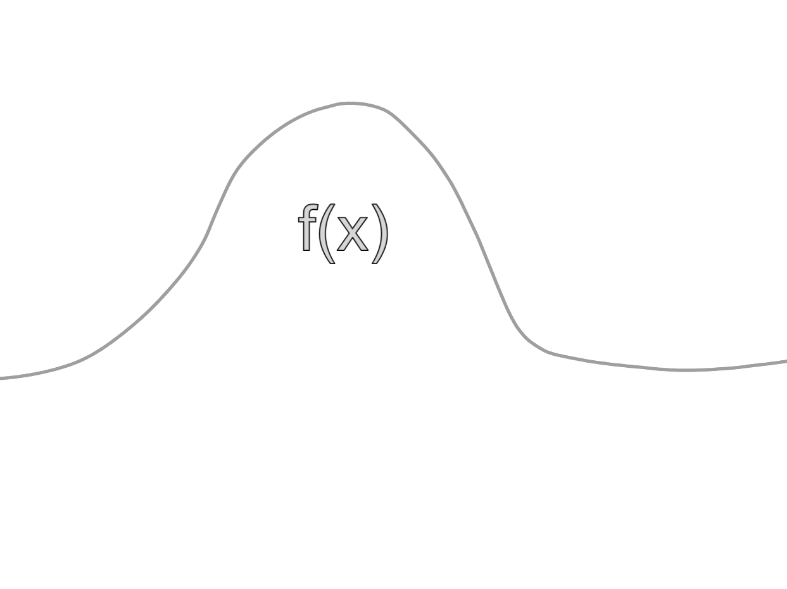

An Integral is the continuous analog of a sum, usually found to find areas, volumes and most importantly the area under a curve…

An integral can also be defined as the opposite of a derivative as getting the value of an integral is the opposite of getting the value of a derivative.
Integrals are noted with the integral sign that looks like a fancy s…
All integrals are present with the integral sign, sometimes there can be multiple…
Indefinite Integrals are integrals that do not have upper and lower limits or numbers that are above and below it…
Indefinite Integrals show all the antiderivatives in a function…
Definite Integrals are integrals that do have upper and lower limits or numbers that are above and below it…
To find a Definite Integral, first do the power rule…
Then we plug in the values…
The definite integral is -120.
Sometimes antiderivatives and indefinite integrals can be confusing to tell apart but the main difference is the constant of integration…